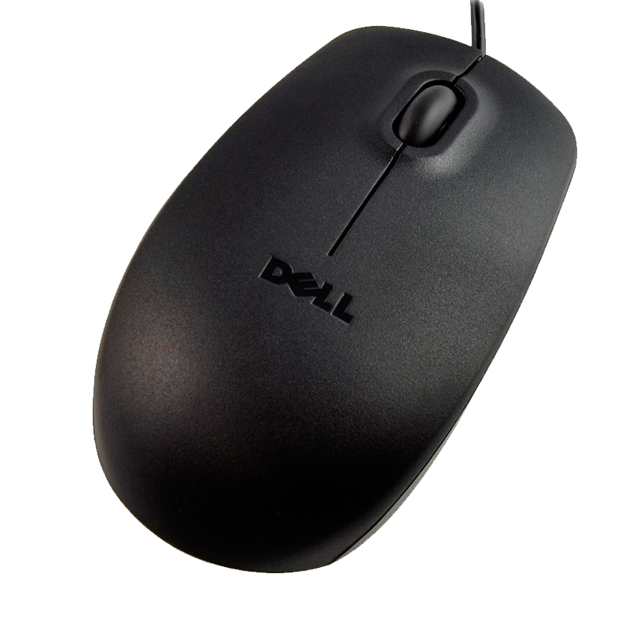

It is a pointing device used to facilitate the management of a graphic environment on a computer. It is usually made of plastic, and is used with one of the hands. It detects its relative movement in two dimensions by the flat surface on which it rests, usually reflected through a pointer, cursor or arrow on the monitor.
The mouse can be connected wired (PS / 2 and USB ports) or wirelessly (wireless or wireless communication, through a USB adapter is connected to the computer and this sends the signal to the mouse, can also be through connectivity bluetooth or infrared).